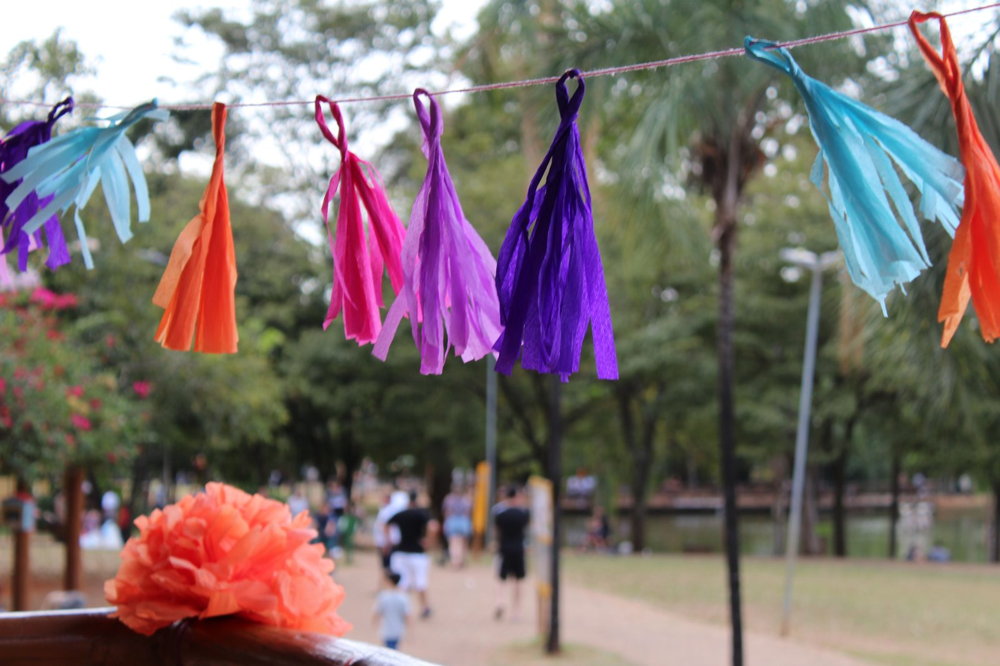

flore-serCerrado que floresce na cidade
Visão Geral
Painel de Extensão · Flore-Ser
ED

A extensão da UFG que ocupa os espaços públicos de Goiânia: plantio de nativas do Cerrado, PANCs e hortas, oficinas de arte-educação e eventos culturais. 24 espaços · 100 extensionistas · ~10.000 pessoas.
Acesso institucional para a equipe do projeto Flore-Ser. Coordenação: Elis Veloso (SIBI/UFG) e Luiz Mello (FCS).